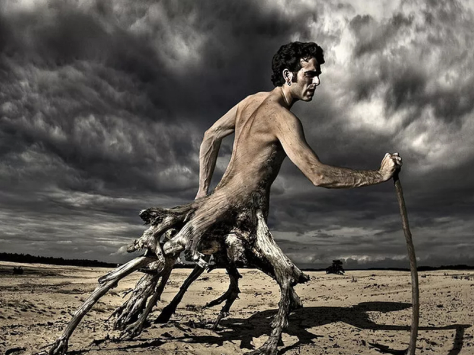

Flor LaranjaPapagaio colorido voandoLua se derretendoPonto de turismo ecológico. Ponte para o mar.Bola transparente que reflete o localColar indígena ao por do solLuzes de neon em formato de triânguloRosto de uma menina com foco no sol batendo sobre o olho

Homem com pernas de árvoresDuas mãos fazendo formato de coração em direção ao solMulher de costas com borboletas ao redorLâmpada em pé no chão molhadoAgenda aberta com luzes no fundoRosto pintado de verde com olho das cores da bandeira do brasilRosto de lobo com pêlos em neon vermelho e azul